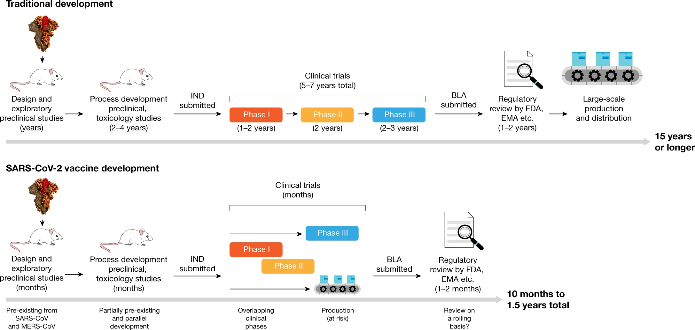

When a sufficiently large percentage of a population has been vaccinated, herd immunity results. Herd immunity protects those who may be immunocompromised and cannot get a vaccine because even a weakened version would harm them. The effectiveness of vaccination has been widely studied and verified.
To understand how vaccines work, it helps to first look at how the body fights illness.
Check on this video how our body fights infection and how vaccines can help our immunity system to fight easily the intruder.
SARS-CoV-2 is a member of the coronavirus family. There are hundreds of coronaviruses — including four that can cause the common cold, as well as the coronaviruses that sparked the SARS, or severe acute respiratory syndrome, epidemic in 2002 and the emergence of MERS, or Middle East respiratory syndrome, in 2012.
Although vaccines against coronaviruses have yet been licensed for use in humans their development had previously been considered and research were made.
After the 2002–2004 SARS outbreak, vaccines against SARS-CoV were developed preclinically and two were tested in phase I trials. However, development was stopped because the virus was eradicated from the human population and has not re-emerged since 2004. Vaccines against MERS-CoV are currently under active development.
Traditional vaccine development can take 15 years or more, starting with a lengthy discovery phase in which vaccines are designed and exploratory preclinical experiments are conducted. This is usually followed by a phase in which more formal preclinical experiments and toxicology studies are performed and in which production processes are developed.
During this process an investigational new drug (IND) application is filed and the vaccine candidate then enters phase I, II and III trials.
If, when phase III trials are completed, the predetermined end points have been met, a biologics licence application (BLA) is filed, reviewed by regulatory agencies and finally the vaccine is licensed.
After that point, large-scale production begins.
Because of knowledge gained from the initial development of vaccines for SARS-CoV and MERS-CoV, the discovery phase was omitted.
Existing processes were adopted, and phase I/II trials were started. Phase III trials were initiated after the interim analysis of phase I/II results, with several clinical trial stages running in parallel.
In the meantime, vaccine producers have started the large-scale production of several vaccine candidates and submitted regulatory review and on 2 December, a vaccine made by drug giant Pfizer with German biotech firm BioNTech, became the first fully-tested immunization to be approved for emergency use. After this, other vaccines were filled and their use were approved too.
Sources: https://www.nature.com/articles/s41586-020-2798-3
https://www.nature.com/articles/d41586-020-03626-1
https://www.immunology.org/coronavirus